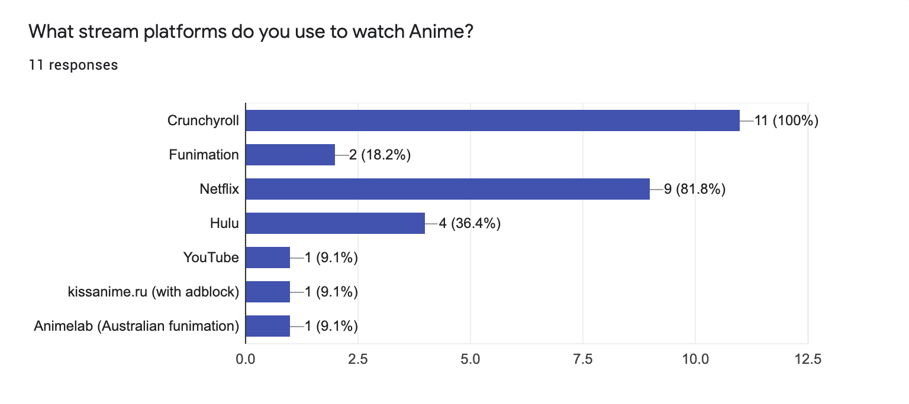
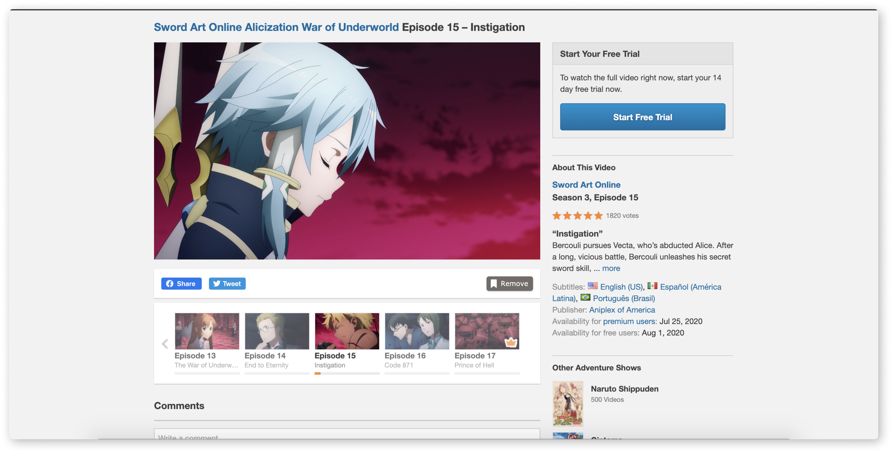
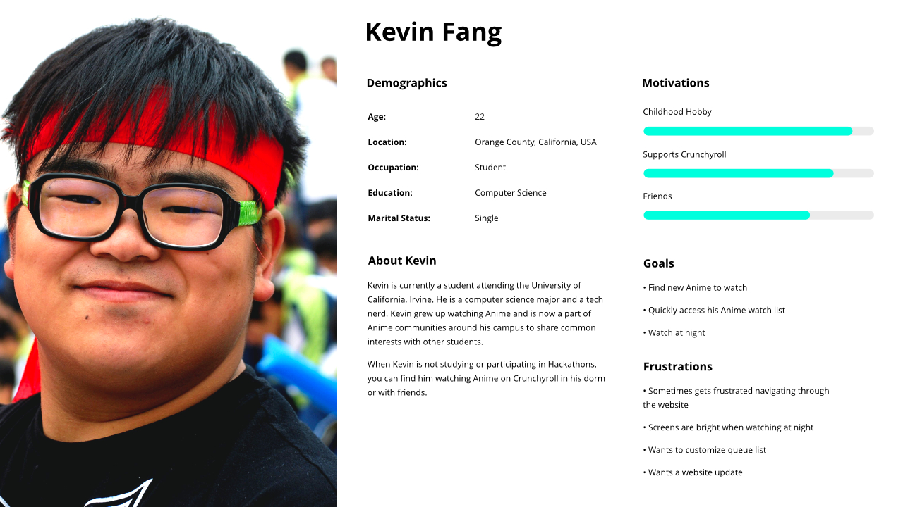
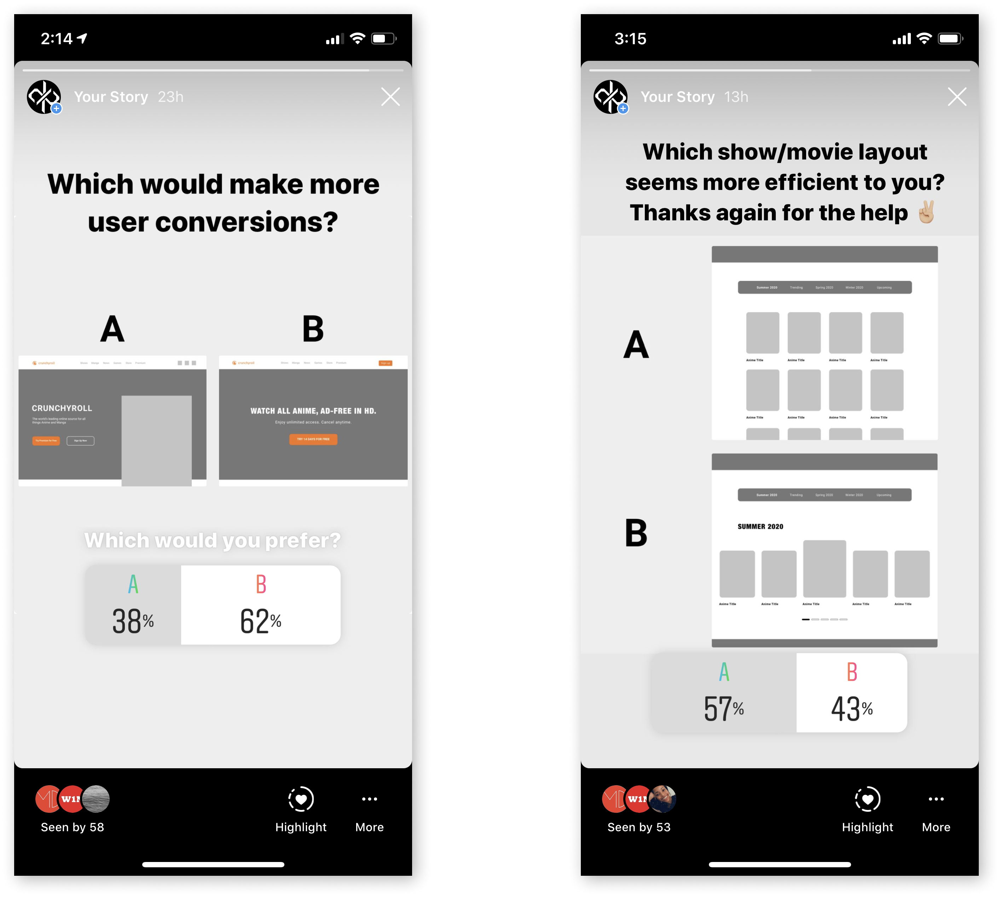

Crunchyroll
An unsolicited redesign project of a leading Anime streaming platform.
An unsolicited redesign project of a leading Anime streaming platform.
Design Role
I was the sole UX Designer for this unsolicited redesign project. By identifying current UX problems that affect Crunchyroll’s business goals, I was able to drive the design solutions based on research and user needs.
Project Date: July, 2020 - August, 2020
What is Crunchyroll and Anime?
Crunchyroll is an American video streaming platform that focuses on licensed Japanese Anime and live-action drama. Anime is short for Japanese animation which is known for its 2-D and stylized art style. In addition, Anime is heavily a part of Japanese culture and has a growing international audience each year.
With over 70 million registered users (updated July, 2020), 13 million monthly active users (updated March, 2019), and 3 million paying subscribers (updated July, 2020), Crunchyroll is without a doubt the leading Anime streaming service.
To understand Japanese TV airing cycles, an Anime series will air one weekly episode. For viewers, they watch an episode and simply wait for the next episode to air on the next scheduled day and time. In addition, Anime is organized into seasons which is commonly known as “Seasonal Anime.” For example, if a series is set to air its first episode in October 2020, then the series would be categorized as “Fall 2020.”
One Anime season typically airs twelve to thirteen episodes with at least a year before a sequel is confirmed to air. In some cases, a series will air two combined seasons into one, which is around twenty-five episodes and will run through an estimated two seasons or six months.
With a quick rundown of how Japanese airing cycles work, let’s see how this affects audience demographics. For Japanese audiences, broadcasting stations will announce what day and time an Anime series will air its episodes. However, this gives a disconnection to international audiences since they are restricted to time differences and they do not have access to Japanese broadcasting services. Instead, they have to look into online resources such as MyAnimeList to figure out what days an Anime will air its next episode.
Defining Existing Website Problems
The most notable thing that I believe almost any Crunchyroll user would agree on is that the website is outdated in regards to the design and functionality. After studying each page within the website, I noticed that the outdated pages are the landing page, the Shows page, and the page layout of an Anime show. However, the Crunchyroll game and store pages seem to be updated compared to the former pages. So I made a note that when it comes to the design solutions, the design must be clean and there could be a sense of direction for the user to follow.
After identifying current UX problems, the next thought was
“How does the current experience affect Crunchyroll’s business?”
Through analysis, Crunchyroll’s main forms of revenue come from their
premium service and online store.
• Premium Subscription is what allows users to watch Anime without ads and can watch new
episodes 1-hour after Japanese airing time.
• Online Store is where users can purchase Crunchyroll merchandise and other goods.
Next, Crunchyroll’s forms of user conversion is from the Anime content they provide, SEO strategies,
their news page, and their mobile games from the iOS and Google Play stores. Adding to my notes, I kept in
my mind to drive the solutions that encourage more user conversion and to have Crunchyroll’s main forms
of revenue more noticeable to users.
Competitive Analysis
• Funimation - Anime video streaming platform
• Netflix - Leading video streaming platform
• Hulu - Leading video streaming platform
• Amazon Prime Video - Video streaming platform
• Illegal Anime streaming platforms

I conducted an online survey with 11 responses and I had a question with the intent on
finding out if these users use any other website aside from Crunchyroll to watch Anime.
While 100% of the responders use Crunchyroll, 18.2% also use Funimation, 81.8% use Netflix,
36.4% use Hulu, and three of the responders also use YouTube, KissAnime, and Animelab.
User Research

Now that I had existing data from my research on Crunchyroll’s business, I dug deeper
to understand the UX problems. In my online survey, I asked the users how they felt
about the current design layout, navigation experience, what pages they use the most
and the least, and anything else they would like to see on the website. While the answers were mixed, feedback requested:
• A UI update, especially the landing page and shows page
• Dark mode
• A way to organize their queue/watch lists
• Filter options
While these requests are mostly a UI change, it still affected the user experience overall, and the
current feedback was mostly negative.

After the survey, I studied the flow of the website and I developed a Information Architecture chart to help me
gain a better understanding where potential disconnects can happen.
How The Current Design Affects My Solutions
With all the data I acquired through my research, I compiled a list of what to
redesign based on business goals and user needs.
Storytelling - My solution for this is to give Crunchyroll’s pages a spotlight of their own through the
landing page. In theory, I believed this solution could increase revenue and user conversion by making it more noticeable.
Shows Page - The user should have the freedom to make their searches as quick and painless as possible. Crunchyroll does
have a filtration system when navigating the shows page, but I believe it could be improved so navigation is less confusing.

Queue List - User feedback mentioned that favorited Anime function on the last viewed episode of that Anime. This sparks confusion
because many Anime have multiple seasons. I tested this myself with an Anime that I know that currently has 5 seasons. I previewed
a random episode from a random season and checked my queue list. It read as “Shokugeki no Soma - Episode 5 *title name*.” My
immediate thought was “Well which episode 5 from which season?”
Anime Details Page - Feedback I received when a user visits the page of an Anime show is to make current shows more apparent on
its specific page and on the front page. The current layout is not visually engaging so I kept in my mind to modernize these pages and
to have the user feel they are getting what they paid for.

Persona
I created a persona based on the results of my user research. In addition, I implemented other Crunchyroll
statistics that I found while conducting my research; which drove my persona to be a 22-year old Asian male who is a college student.
• 75% of Crunchyroll subscribers that are under the age of 35 (updated January 2016)
• 18 years old is the median age of a Crunchyroll free user (updated January 2016)

Ideation, Wireframe and A/B Testing
I jumped into creating wireframes and through multiple iterations, I found myself
coming up with a few great ideas, but needed feedback on what would seem the most efficient in converting
users and creating an improved user experience. I shared my variations of each solution to my Instagram followers with
various backgrounds to gain their insight.

User Testing
After more iterations, I developed a prototype that needed testing. I took
4 Crunchyroll users that I know and tested them through a user flow.
Check out the Figma Prototype
Task Flow
• Start on the home page
• Navigate to the “Shows” page
• Add an Anime from the “Shows” page to the Watch list
• Navigate to the watch list page and add that Anime to a specific playlist
• Finally, visit the page of that Anime
Results
100% OF THE TESTERS LIKED THE PROPOSED SOLUTIONS, ESPECIALLY THE FILTER THAT I ADDED ON THE
SHOWS PAGE AND WATCH LIST.
Tester Comments
"I didn’t know they had a store"
“Easier to use than what Crunchyroll has right now”
“Smoother. Feels like Hulu.”
“I would pay for Crunchyroll”
Design Solutions
Storytelling - By updating the design and concluding with a storytelling method, the landing page
is now visually engaging and each Crunchyroll page: Shows, Manga, News, Store, and Games are highlighted.
In theory, I believe it would increase revenue and user conversion due to all Crunchyroll services being
visible to the user.

Shows Page - Dark mode was desired from the survey, so I changed the “Shows” page into dark mode for easier
viewing as the user searches for more Anime to watch. In addition, I cleaned up the layout, adding more white space
so that the user can process the long list more easily. I reduced the filtration system to Trending, Seasonal, Drama,
and Genres and included a sorting filter.

Watch List - I personally felt that not everyone will understand what a “queue list” is, so I decided to change the name
to “Watch list,” to give a bit more clarity on what this page is. On this page the changes I had in mind was to treat each Anime
season as its own page and not combine multiple seasons into one category.
Users can see which Anime is currently airing, a rating system and an option to add an Anime to a list. The user has the freedom
to create multiple playlists, along with filters to navigate to each playlist and genre.

Show Details Page - I redesigned the Anime show page to make the current episode that the user watched last watched, much larger and
more apparent. Following the new video preview, the user can add the Anime to a playlist, quickly jump to another episode, and read
general information about the series.

Responsive Design - Finally, I made a responsive layout as the current website is not responsive.

Final Thoughts
I had a great time doing this redesign and I’m proud of the results. If I could go back, I would definitely do more user testing to maximize feedback on the proposed solutions. Other than that, it felt crazy to me how much the research and understanding business goals naturally drove the design solutions so that the results produced a user-centered and clean design.